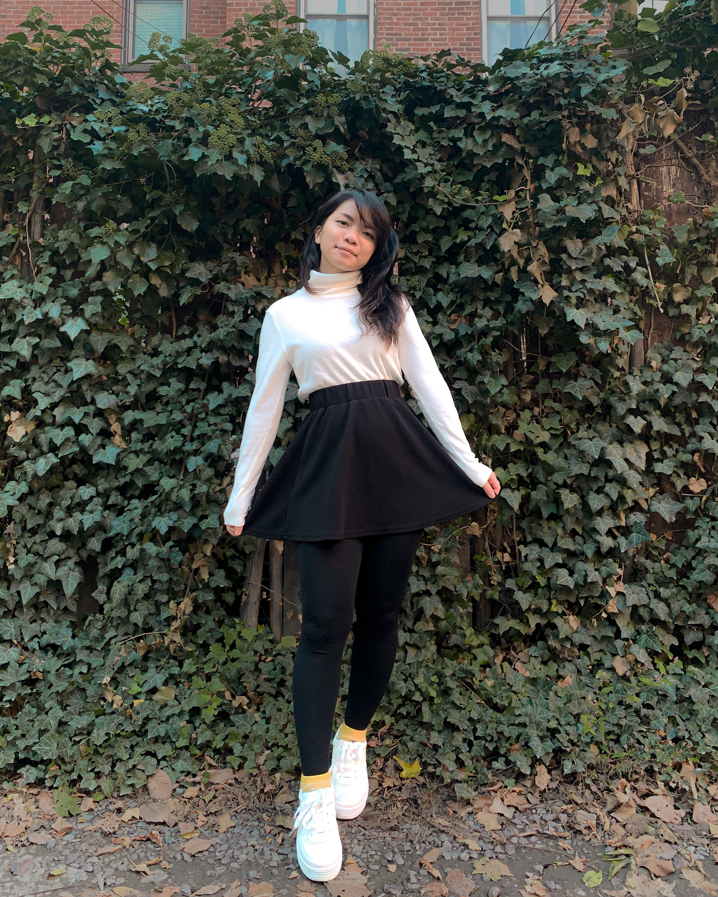

ABOUT
Glad to have you here! I’m Anisa. I’m a Computer Science and Design major currently in my fifth and final year at Northeastern University. I was born in West Haven, CT and raised by two strong human beings who immigrated all the way from their respective small towns in Malaysia to provide an amazing life for me, my sister, and my five brothers. And you are?
Although I’m just below five feet tall, I find that I have high aspirations. As a growing developer, designer, writer, and baker, I look forward to making the world a better place, one fixed bug, one em space, one slant rhyme, or one chocolate chip at a time.
Throughout my years at Northeastern, I developed a strong interest in web development and user experience design. With the help of all the amazing people I got to work with during my co-ops, work studies, and part-time jobs, I have gotten much closer to achieving my goals.
This website is a collection of my works.